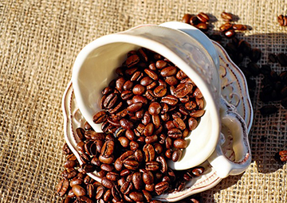

スタッフ募集のお知らせ
あなたもDummy Cafeで一緒に働きませんか？私達と一緒に働いてくれるアルバイトを募集します。詳しくは、スタッフの募集ページへ
2017.2.10
私たちは、たった1杯のコーヒーにとてつもなくこだわっています。
ほんとうに美味しいコーヒーをお客様に提供するために、厳選された最高のコーヒー豆のみを焙煎して使用しています。また、焙煎したコーヒー豆は時間が立つと味が落ちてしまうので、Dummy Cafeでは、その日に提供するコーヒーは、その日に焙煎したコーヒー豆しか使用しません。
おいしいコーヒーの抽出するのに最適なお湯の温度は93℃です。Dummy Cafeでは、この93℃にこだわってコーヒーを抽出しています。もちろん、機械は使わず1杯ずつ丁寧にハンドドリップでコーヒーを抽出し、お客様に提供します。
あなたもDummy Cafeで一緒に働きませんか？私達と一緒に働いてくれるアルバイトを募集します。詳しくは、スタッフの募集ページへ
2017.2.10
ついにDummy Cafeがオープンしました。みなさん是非コーヒーを飲みに来て下さいね。
2017.1.25
本日、Dummy CafeのWEBサイトを公開しました。
2017.1.21